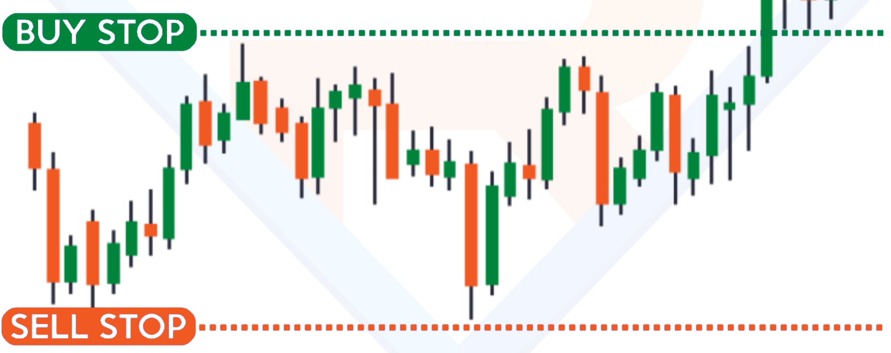
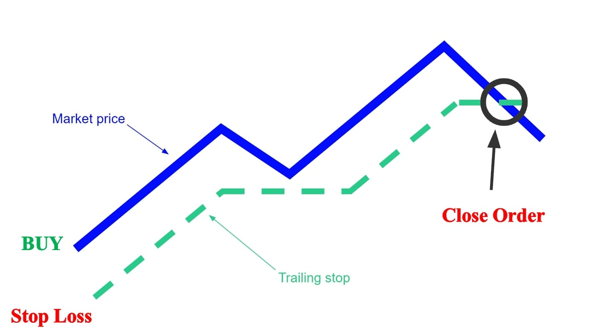
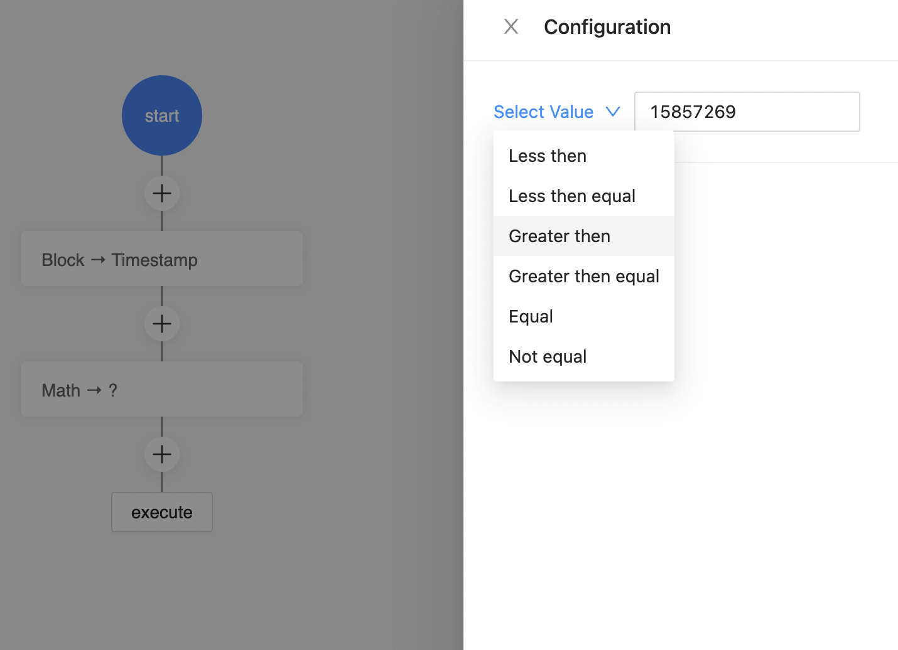
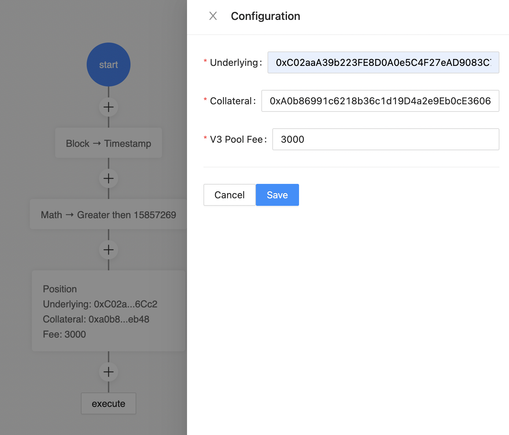
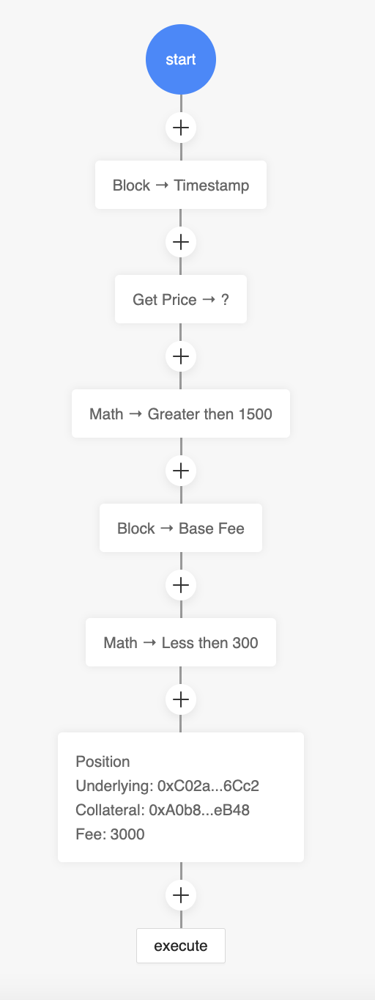
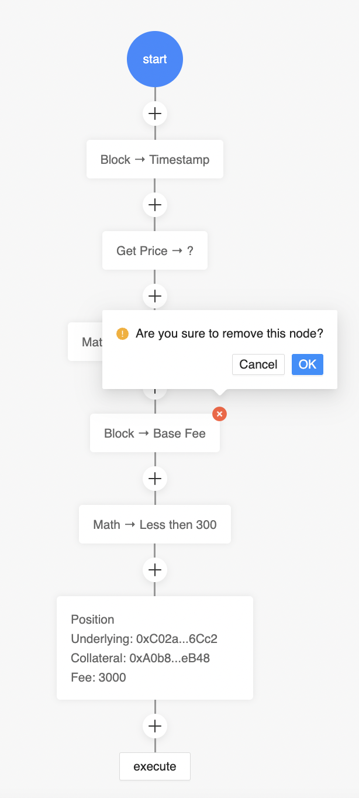

<!doctype html>
<html lang="en">
  <head>
    <meta charset="utf-8">

    <title>Conditional Orders</title>

    <meta name="apple-mobile-web-app-capable" content="yes" />
    <meta name="apple-mobile-web-app-status-bar-style" content="black-translucent" />

    <meta name="viewport" content="width=device-width, initial-scale=1.0, maximum-scale=1.0, user-scalable=no, minimal-ui">

    <link rel="stylesheet" href="./reveal.js/css/reveal.css">
    <link rel="stylesheet" href="./reveal.js/css/theme/black.css" id="theme">

    <!-- Code syntax highlighting -->
    <link rel="stylesheet" href="./reveal.js/lib/css/zenburn.css">

    <!-- Printing and PDF exports -->
    <script>
      var link = document.createElement( 'link' );
      link.rel = 'stylesheet';
      link.type = 'text/css';
      link.href = window.location.search.match( /print-pdf/gi ) ? './reveal.js/css/print/pdf.css' : './reveal.js/css/print/paper.css';
      document.getElementsByTagName( 'head' )[0].appendChild( link );
    </script>

    <!--[if lt IE 9]>
    <script src="./reveal.js/lib/js/html5shiv.js"></script>
    <![endif]-->

    <style>
      .reveal .slides h1, .reveal .slides h2, .reveal .slides h3 {
        text-transform: none;
      }

      .container {
        display: flex;
      }

      .container > div {
        flex: 1;
      }

      .left {
        left:-8.33%;
        text-align: left;
        float: left;
        width:50%;
        z-index:-10;
      }

      .right {
        left:31.25%;
        top: 75px;
        text-align: left;
        float: right;
        z-index:-10;
        width:50%;
      }

      .small-text {
        font-size: 85%;
      }
    </style>
  </head>

  <body>
    <div class="reveal">
      <div class="slides">

<!------------------------------------------------------->


<section data-markdown><script type="text/template">

# Conditional Orders

A gnosis safe module that lets you create custom standing orders to be executed by keepers when arbitrary conditions are met

<div style="font-size: 60%">By:<br/> Dariusz Glowinski, Mick de Graaf, Doug Hoyte, <br/> Garv Khurana, Kasper Pawlowski, Rangel Stoilov</div>

</script></section>


<section data-markdown><script type="text/template">

### Weiroll

"A simple and efficient operation-chaining/scripting language for the EVM"

* Very flexible low-level way to express a sequence of CALL/DELEGATECALL/STATICCALL operations
* Results from calls can be used as input to future calls
* [https://github.com/weiroll/weiroll](https://github.com/weiroll/weiroll)

</script></section>


<section data-markdown><script type="text/template">

### Use-Case: Limit Orders

* Standing order that will fill when a price is met
* If this standing order is configured to close out a position, can function as a stop-loss or take profit



</script></section>


<section data-markdown><script type="text/template">

### Use-Case: Trailing Stops

* Special dynamic stop loss whose price level adjusts when price moves advantageously, to lock-in unrealised gains



</script></section>


<section data-markdown><script type="text/template">

### Use-Case: Advanced Orders

* Good-Before/After (time limits)
* If-Touched (order turns into a market/limit/etc order if a price threshold triggered)
  * Price could be of *different* asset!
* One-Cancels-All (atomic order clusters)
* Leverage maintenance (automatically deleverage positions when price goes bad)
* Unlocks hundreds of other order variations available in CeFi

</script></section>


<section data-markdown><script type="text/template">

## Our UI

* Advanced drag-and-drop order customisation interface
* Runs in-browser, compiles weiroll scripts ready to install into your gnosis safe
* Big built-in library of conditions, fully composable
  * Literally money lego

</script></section>


<section data-markdown><script type="text/template">



</script></section>


<section data-markdown><script type="text/template">



</script></section>


<section data-markdown><script type="text/template">




</script></section>


<section data-markdown><script type="text/template">

## Thank You!

[https://github.com/euler-xyz/ethlisbon-hackathon](https://github.com/euler-xyz/ethlisbon-hackathon)

</script></section>


<!------------------------------------------------------->


      </div>

    </div>

    <script src="./reveal.js/lib/js/head.min.js"></script>
    <script src="./reveal.js/js/reveal.js"></script>

    <script>

      // Full list of configuration options available at:
      // https://github.com/hakimel/reveal.js#configuration
      Reveal.initialize({
        controls: true,
        progress: true,
        history: true,
        center: true,

        transition: 'none', // none/fade/slide/convex/concave/zoom

	math: {
          mathjax: '../lib/MathJax/MathJax.js',
          config: 'TeX-AMS_SVG-full',
	},

        // Optional reveal.js plugins
        dependencies: [
          { src: './reveal.js/plugin/markdown/marked.js', condition: function() { return !!document.querySelector( '[data-markdown]' ); } },
          { src: './reveal.js/plugin/markdown/markdown.js', condition: function() { return !!document.querySelector( '[data-markdown]' ); } },
          { src: './reveal.js/plugin/highlight/highlight.js', async: true, callback: function() { hljs.initHighlightingOnLoad(); } },
          { src: './reveal.js/plugin/math/math.js', async: true },
        ]
      });

    </script>

  </body>
</html>
